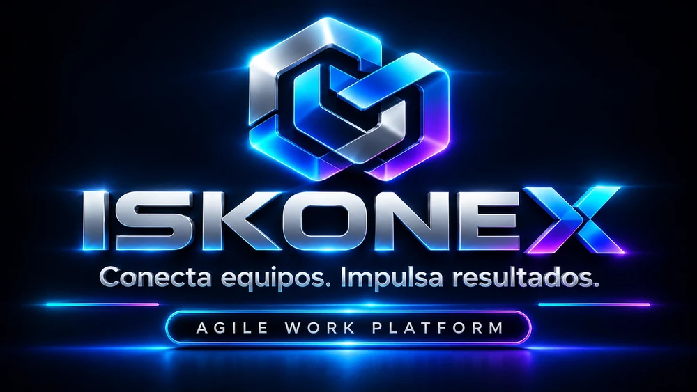

01 / 05
Gestión de equipos

Iskonex Scrum
Conecta equipos. Impulsa resultados.
Plataforma de trabajo ágil para equipos que construyen producto. Reúne en un solo lugar el tablero, el backlog, los sprints y las ceremonias de Scrum, de modo que el equipo sepa qué hace, por qué y cuánto falta.
Para qué sirve
- Tablero por carriles y épicas con estados, bloqueos y responsables.
- Product Backlog con prioridad, puntos y estimación; Sprint Backlog por iteración.
- Burndown, velocidad del equipo, agenda de eventos y retrospectiva.
- Roles (administrador, Scrum Master, equipo), invitaciones y respaldos del proyecto.
- Firebase Auth
- Firestore
- Cloudflare
- 42 pruebas de reglas